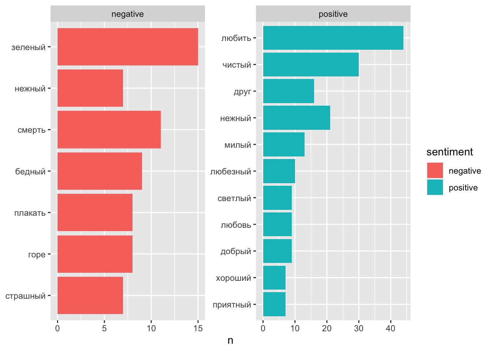
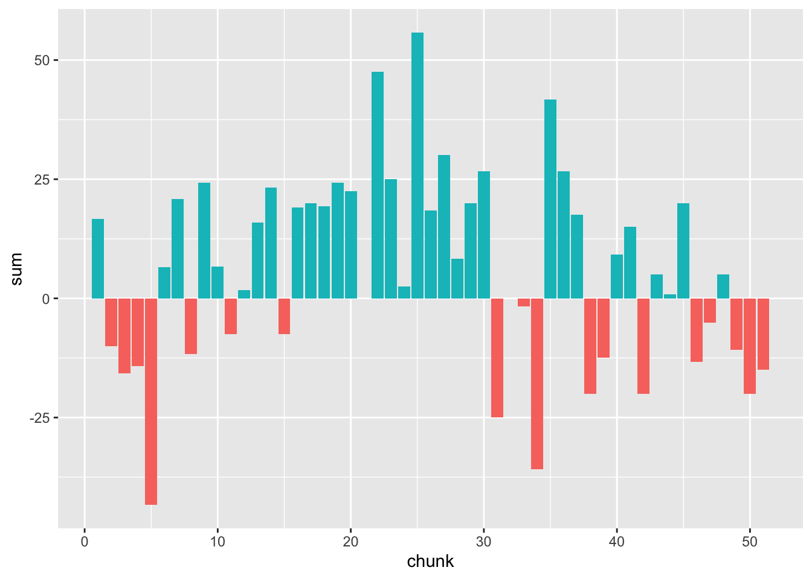
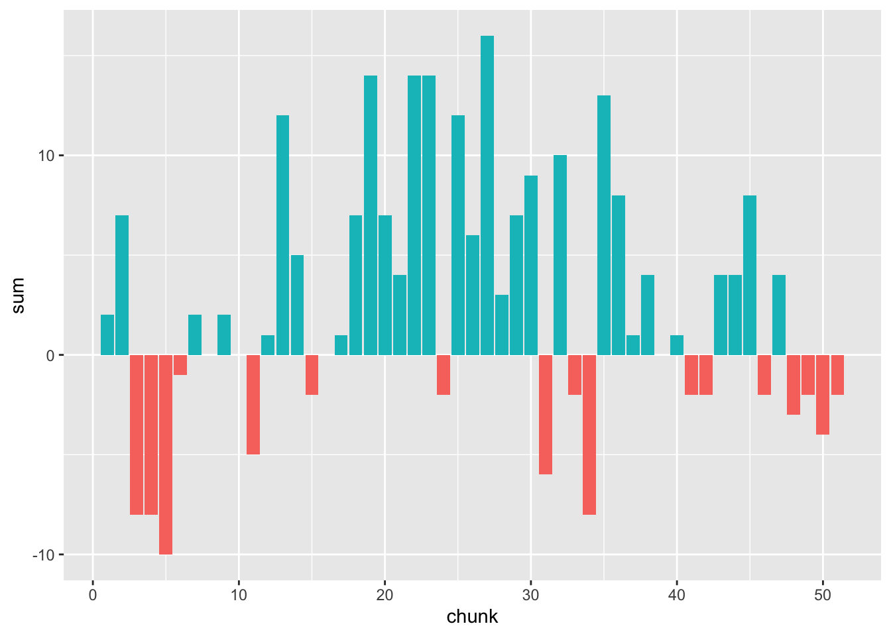

Тема 10 Эмоциональная тональность
10.1 Анализ тональности
Анализ тональности текста (англ. Sentiment analysis) — задача компьютерной лингвистики, заключающаяся в определении эмоциональной окраски (тональности) текста и, в частности, в выявлении эмоциональной оценки авторов по отношению к объектам, описываемым в тексте.
В целом, задача анализа тональности текста эквивалентна задаче классификации текста, где категориями текстов могут быть тональные оценки (позитивная, негативная или нейтральная).
10.2 Подходы
Сделав большое обобщение, можно разделить существующие подходы на следующие категории:
- подходы, основанные на правилах;
- подходы, основанные на словарях;
- машинное обучение с учителем;
- машинное обучение без учителя.
В этом уроке мы будем работать только со словарями. Подробнее о других подходах можно прочитать здесь.
10.3 Тезаурусы
Подходы, основанные на словарях, используют так называемые тональные словари (англ. affective lexicons) для анализа текста. В простом виде тональный словарь представляет из себя список слов со значением тональности для каждого слова.
Сравнивая текст (или отрывок текста) со словарем, мы можем вычислить тональность для всего текста (или отрывка). Словари эмоциональной тональности размечаются вручную, полуавтоматически или автоматически на основании уже существующих тезаурусов. В основном они содержат лексику из соцсетей, отзывов, Википедии, и поэтому не очень подходят для анализа литературных текстов, особенно написанных 100-200 лет назад.
Разные тезаурусы используют разные шкалы:
- бинарную: negative / positive (-1 / 1)
- тринарную: бинарная + 0 (neutral)
- ранжированную: например, от -5 до 5
В некоторых случаях это дополняется различием между оценочной лексикой (“неряшливый”) и негативным фактом (“кража”) и т.п.
10.4 Лексиконы для русского языка
Установка пакета с лексиконами.
Начало работы.
10.4.1 Chen & Skiena
Русский язык входит в языков, для которых Й. Чен и С. Скиена собрали оценочную лексику (Chen and Skiena 2014). Их лексикон построен на основе графа знаний, связывающего слова на разных языках (на основе Wiktionary, Google Translate, транслитерационных ссылок и WordNet). Слова оцениваются по бинарной шкале ( -1 / 1).
## token score
## 1: пустошь -1
## 2: революционный 1
## 3: расизм -1
## 4: медленный -1
## 5: лекарство 1
## 6: поддержка 1
## 7: стабилизировать 1
## 8: лисица -1
## 9: мягкость 1
## 10: примесь -110.4.2 RuSentLex 2016
Для русского языка в свободном доступе находится РуСен-
тиЛекс (“Создание лексикона оценочных слов русского языка РуСентилекс” 2016). Он содержит около 15000 уникальных слов или фраз, среди которых оценочные слова, а также слова и выражения, не передающие оценочное отношения автора, но имеющие положительную или отрицательную ассоциацию (коннотацию). Возможные значения переменной sentiment: neutral, positive, negative.
## token speech.part lemma sentiment source
## 1 любить Verb любить neutral fact
## 2 самозабвенный Adj самозабвенный positive feeling
## 3 потянуть Verb потянуть neutral fact
## 4 рожа Noun рожа negative opinion
## 5 острозаразный Adj острозаразный negative fact
## 6 тюфяк Noun тюфяк neutral fact
## 7 просчитаться Verb просчитаться negative fact
## 8 перехлестнуть Verb перехлестнуть positive/negative opinion
## 9 беспокойный Adj беспокойный negative feeling
## 10 задеревенеть Verb задеревенеть negative opinion
## ambiguity
## 1 ЛЮБИТЬ (НУЖДАТЬСЯ В УСЛОВИЯХ)
## 2
## 3 ТЯНУТЬ (ТАЩИТЬ НАПРАВЛЯЯ КУДА-ЛИБО)
## 4 ЛИЦО ЧЕЛОВЕКА
## 5
## 6 МАТРАЦ
## 7
## 8 ОБУЯТЬ, ОБУРЕВАТЬ
## 9
## 10 ДЕРЕВЕНЕТЬ, КОСТЕНЕТЬ (НЕМЕТЬ, ВОЗМОЖНО ОТВЕРДЕВАЯ)10.4.3 AFINN
Словарь AFINN содержит 7268 оценочных слов, которые оцениваются по шкале от -5 до +5.
## token score
## 1: экстатический 1.7
## 2: знаковый 1.7
## 3: счастливчик 5.0
## 4: суматошный -3.3
## 5: гад -5.0
## 6: выразительный 5.0
## 7: жутковатый -5.0
## 8: креативность 5.0
## 9: обнадёживать 2.5
## 10: привлекательно 5.010.4.4 NRC
Переведенная версия списка положительных и отрицательных слов Mohammad & Turney (2010)41. Таблица содержит 5179 слов с не нейтральными оценками. Бинарная шкала: -1 / 1.
## token score
## 1: метанол -1
## 2: диссонанс -1
## 3: дерьмо -1
## 4: коварный -1
## 5: неподвижность 1
## 6: разрушенной -1
## 7: шестерня 1
## 8: рябить -1
## 9: досуг 1
## 10: поспешный -110.5 Анализ тональности с Tidy Data
(Silge and Robinson 2017), говоря об анализе эмоционально тональности в духе tidy data, предлагают следующую иллюстрацию:
 Авторы предостерегают, впрочем, что современные лексиконы могут быть не слишком информативны применительно к классической литературе (в книге анализируются романы Джейн Остин). Мы попробуем, тем не менее, подвергнуть “сентиментальному анализу” сентиментальную прозу Карамзина.
Авторы предостерегают, впрочем, что современные лексиконы могут быть не слишком информативны применительно к классической литературе (в книге анализируются романы Джейн Остин). Мы попробуем, тем не менее, подвергнуть “сентиментальному анализу” сентиментальную прозу Карамзина.
Прежде всего для этого ее необходимо токенизировать, лемматизировать и привести в опрятный формат, как мы делали в предыдущем уроке.
liza_tbl <- as_tibble(liza_ann) %>%
filter(upos != "PUNCT") %>%
select(lemma) %>%
rename(token = lemma) %>%
mutate(chunk = round(((row_number() + 50) / 100), 0))
liza_tbl## # A tibble: 5,049 × 2
## token chunk
## <chr> <dbl>
## 1 мочь 1
## 2 быть 1
## 3 никто 1
## 4 из 1
## 5 жить 1
## 6 в 1
## 7 Москва 1
## 8 не 1
## 9 знать 1
## 10 так 1
## # ℹ 5,039 more rowsСтоп-слова, то есть слова, не несущие никакой смысловой нагрузки, нам не нужны, но удалять их отдельно нет смысла: мы соединим, при помощи функции inner_join() (см. предыдущие уроки), наш текст с одним из лексиконов, и это само по себе отфильтрует ту лексику, которая может быть потенциально интересна.
Напомню, что inner_join() работает так:

liza_sent <- liza_tbl %>%
inner_join(rusenti2016) %>%
select(-lemma, -ambiguity, -source) %>%
filter(sentiment != "neutral")## Joining with `by = join_by(token)`## # A tibble: 671 × 4
## token chunk speech.part sentiment
## <chr> <dbl> <chr> <chr>
## 1 приятный 1 Adj positive
## 2 старый 1 Adj negative
## 3 старый 1 Adj negative
## 4 старый 1 Adj positive
## 5 красота 1 Noun positive
## 6 приятный 1 Adj positive
## 7 мрачный 1 Adj negative
## 8 горе 1 Noun negative
## 9 горе 1 Noun negative
## 10 правый 1 Adj positive
## # ℹ 661 more rows10.6 Негативные и позитивные слова
Посмотрим на общую статистику.
## # A tibble: 246 × 3
## token sentiment n
## <chr> <chr> <int>
## 1 любить positive 44
## 2 чистый positive 30
## 3 нежный positive 21
## 4 друг positive 16
## 5 зеленый negative 15
## 6 милый positive 13
## 7 смерть negative 11
## 8 любезный positive 10
## 9 бедный negative 9
## 10 добрый positive 9
## # ℹ 236 more rowsВы уже догадались, что это можно изобразить в виде любезных столбиков:
liza_sent %>%
count(token, sentiment) %>%
arrange(-n) %>%
top_n(15) %>%
ggplot(aes(reorder(token, n), n, fill = sentiment)) +
geom_bar(stat = "identity") +
facet_wrap(~sentiment, scales = "free") +
coord_flip() +
xlab(NULL)## Selecting by n
Ок, с “зеленым” явно вышла неувязка. Удалим его вручную. “Старый” тоже можно удалить: в доброй старушке у Карамзина явно ничего плохого нет. “Тучный” в этом произведении окрашено скорее положительно, можно внести изменения.
liza_sent <- liza_sent %>%
filter(!token %in% c("зеленый", "старый")) %>%
mutate_at(vars(sentiment), ~
case_when(token == "тучный" ~ "positive", TRUE ~ .))Для нескольких слов переменная sentiment имеет значение “positive/negative”, здесь мы тоже можем внести ясность вручную:
10.7 Облако эмоций
Для разнообразия, чтобы не переделывать столбики, представим эмоциональную лексику в виде облака слов. Но не простого облака, а сравнительного.
##
## Attaching package: 'reshape2'## The following object is masked from 'package:tidyr':
##
## smiths## Loading required package: RColorBrewerliza_sent %>%
count(token, sentiment, sort = T) %>%
acast(token ~ sentiment, value.var = "n", fill = 0) %>%
comparison.cloud(colors = c("grey20", "grey80"),
max.words = 100)
В виде обычного облака можно показать отдельно положительно окрашенную лексику:
liza_sent %>%
filter(sentiment == "positive") %>%
count(token, sort = T) %>%
with(wordcloud(token, n, max.words = 100)) Такое облако стоит заламинировать и повесить на стену.
10.8 Тональность текста в целом
Чтобы делать какие-то выводы о повести в целом, нам нужно перевести столбец sentiment в числовой формат:
liza_sent_num <- liza_sent %>%
mutate(sentiment = case_when(sentiment == "positive" ~ 1,
sentiment == "negative" ~ -1))
liza_sent_num %>% summarise(sum = sum(sentiment))## # A tibble: 1 × 1
## sum
## <dbl>
## 1 133## [1] 133Сумма значительно больше нуля, а значит положительные чувства в повести, хотя и со вздохами, преобладают!
10.9 Эмоции и развитие сюжета
Мы можем посчитать такие же суммы для каждого из отрывков.
Теперь смену доминирующего настроения можно отразить на оси повествовательного времени. Добавим еще одну категориальную переменную, она понадобится для визуализации.

Негативная тональность в начале повести, в районе 500-го слова, не имеет ничего общего с развитием сюжета: здесь такие слова, как “неприятель”, “опустошать”. Рассказчик, глядя на опустевший монастырь, вспоминает о “печальной истории” нашего отечества.
11-й отрывок: тревога матери о судьбе дочери. “У меня всегда сердце бывает не на своем месте, когда ты ходишь в город; я всегда ставлю свечу перед образ и молю господа бога, чтобы он сохранил тебя от всякой беды и напасти”. Здесь отразилось романтическое представление Карамзина о городе как обители греха и всяких бедствий.
34-й отрывок – это падение Лизы: “Грозно шумела буря, дождь лился из черных облаков — казалось, что натура сетовала о потерянной Лизиной невинности”. С точки зрения эмоциональной окрашенности этот место даже более насыщено, чем эпизод самоубийства Лизы.
Негативная тональность в конце повести связана не столько с гибелью дочери, сколько со скорбной смертью ее матери, “доброй старушки”: “Лизина мать услышала о страшной смерти дочери своей, и кровь ее от ужаса охладела — глаза навек закрылись”. Мы уже видели в предыдущем уроке, что мать в повести упоминается чаще, чем Лиза (21 раз против 16). Но и ее физическая смерть описана не так мрачно и тревожно, как падение Лизы.
Любопытно, что самые мрачные фрагменты повести (по крайней мере, с количественной точки зрения) посвящены не судьбе бедной девушки, а судьбе отечества: Карамзин историк переигрывает Карамзина-новелиста. Вот это место:
Иногда на вратах храма рассматриваю изображение чудес, в сем монастыре случившихся, там рыбы падают с неба для насыщения жителей монастыря, осажденного многочисленными врагами; тут образ богоматери обращает неприятелей в бегство. Все сие обновляет в моей памяти историю нашего отечества — печальную историю тех времен, когда свирепые татары и литовцы огнем и мечом опустошали окрестности российской столицы и когда несчастная Москва, как беззащитная вдовица, от одного бога ожидала помощи в лютых своих бедствиях.
Жанр сентиментальной повести вынуждает Карамзина говорить о судьбе обманутой девушки, но гораздо большее сочувствие вызывают у него две беззащитные вдовицы: Москва и Лизина мать.